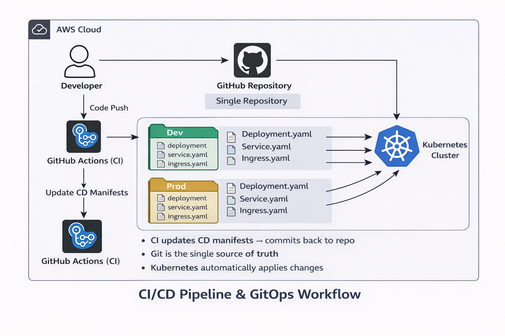

Kubernetes GitOps CI/CD Pipeline with GitHub Actions
Challenge
Manual Kubernetes deployments can lead to configuration drift, deployment errors,
and lack of auditability.
Solution Overview
I implemented a GitOps-style CI/CD pipeline using GitHub Actions,
where Kubernetes deployments are managed declaratively with Git as the single source of truth.
- Orchestration: Kubernetes
- CI/CD: GitHub Actions
- Containers: Docker
- GitOps: Declarative Kubernetes Manifests
- Networking: NGINX Ingress
Architectural Flow
- Code is pushed to GitHub.
- GitHub Actions updates Kubernetes manifests.
- Manifest repository becomes single source of truth.
- Kubernetes reconciles desired state automatically.
GitOps Architecture Diagram

Key Responsibilities & Impact
- Implemented GitOps principles for Kubernetes deployments.
- Eliminated manual cluster interaction.
- Improved deployment consistency and traceability.
GitHub Repository:
View Project on GitHub